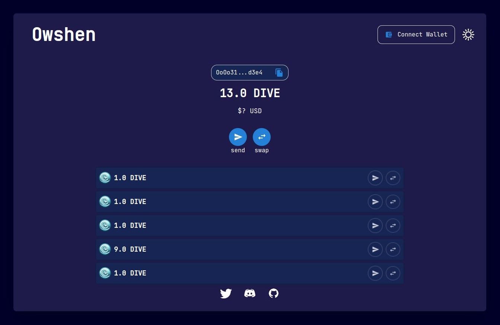

Installation
dependencies
- Clone the project
git clone https://github.com/OwshenNetwork/owshen --recurse-submodules - If you already cloned the project without the cloning submodules first running:
git submodule update --init --recursive - The option
--remotewas added to support updating to the latest tips of remote branches:git submodule update --recursive --remote - Install Rust language:
curl --proto '=https' --tlsv1.2 https://sh.rustup.rs -sSf | sh - Install Foundry:
https://book.getfoundry.sh/getting-started/installation - Install dependencies:
sudo apt-get install nodejs npm libgmp3-dev nasm nlohmann-json3-dev - Install Circom/SnarkJS:
npm i -g snarkjs circom - Install Owshen:
cd owshen && make install - For installing client dependencies we need to go to client route and:
yarnornpm install - Running proper Ganache localhost network:
ganache-cli -d --db chain(We need to import first account from Ganache to metamask for local testing) - Initialize your pub/priv keys and deploying dependencies by running
cargo run -- init --wallet test.json(Your keys will be saved in~/.owshen-wallet.json- also you can running this command multiple times for testing purpose) - For deploying the contracts and hash functions and also test tokens
cargo run --release -- deploy --endpoint "http://127.0.0.1:8545" --from "4f3edf983ac636a65a842ce7c78d9aa706d3b113bce9c46f30d7d21715b23b1d" --name Localhost --config Localhost.json --chain-id "1337" --deploy-owshen --deploy-dive --deploy-hash-function(The--fromflag is private key that we use to deploying contract its set to first ganache private key) - Make sure the client is built in root:
cd client/ && yarn build - For generating supported network file and also serve .zkey files in root of project run:
make assets(This makes a combination of directories that are needed for windows mode) - Run the wallet (GUI):
cargo run -- wallet --port 9000 --db test.json --mode test
For testing purpose you should add localhost ganache-cli config to your metamask networks:
- chain_id:
1337 - rpc_url:
http://127.0.0.1:8545
(After that you need to import the first private-key in you metamask of ganache-cli for testing purpose)
- Beside
~/.owshen-wallet.jsonwe also have.owshen-wallet-cachewhich is cache for owshen contract events for more efficient event processing and reading data from it
Introduction to Owshen
The Owshen 🌊
Owshen is a privacy platform built for EVM-based blockchains. Owshen gathers multiple ideas around cryptocurrency privacy solutions in a single place to provide ultimate privacy.
Using Owshen you can get a fixed Owshen address and start transacting with users inside/outside of the platform, without exposing:
- Source (Spend your coins using Zcash/TornadoCash-style merkle inclusion proofs, along with nullifiers)
- Destination (Monero-style stealth-addresses are generated each time you send your coins to someone)
- Token/Amount (These values are obfuscated and only the sender and receiver, who know a shared-secret, will be able to decode them)
Join our Discord: Owshen
Cryptographic Foundations
Introduction to Cryptography in Blockchain
Cryptography provides the foundational security features for blockchain technology. It enables secure transactions, maintains privacy, and ensures data integrity across distributed networks.
-
Hash Functions: Used to create a unique fingerprint of data. In blockchain, hash functions secure blocks and verify data integrity.
-
Digital Signatures: Ensure that transactions are authorized by the sender. This is done through a combination of a private key for signing transactions and a public key which anyone can use to verify the authenticity of the signature.
-
Consensus Mechanisms: Utilize cryptographic methods to agree on the validity of transactions without the need for a central authority.
Elliptic Curve Cryptography (ECC)
ECC is a public-key cryptography technique based on the algebraic structure of elliptic curves over finite fields. It’s preferred in blockchain technologies for its high security and efficiency, especially given its relatively small key sizes compared to other cryptographic schemes like RSA.
-
Elliptic Curves: An elliptic curve is a set of points that satisfy a specific mathematical equation. For ECC, the equation is generally of the form \(y ^ 2 = x ^ 3 + a * x + b \), where 𝑎 and 𝑏 are constants.
-
Advantages: ECC offers more security per bit of key size than other public-key cryptosystems, leading to faster processing and lower power consumption.
For hash function owshen using Posidon4, The Poseidon hash function is a cryptographic hash function that is specifically optimized for use in blockchain technologies and zero-knowledge proof systems. Developed primarily for its efficiency in zero-knowledge friendly environments, Poseidon offers a potent combination of security and performance, particularly when integrated within systems like zk-SNARKs (Zero-Knowledge Succinct Non-Interactive Argument of Knowledge).
Why we using Posidon4??
-
Efficiency in Arithmetic Circuits: Poseidon is highly efficient when implemented in SNARKs due to its structure, which is optimized for finite field arithmetic. This efficiency makes it especially suitable for blockchain platforms that utilize zero-knowledge proofs to enhance privacy and scalability.
-
Tuning Flexibility: It offers various parameters that can be tuned according to the specific security and performance needs of a system, allowing us to balance these aspects based on their particular requirements.
Architecture of Owshen
Owshen Platform is basically a smart-contract maintaining a Sparse-Merkle-Tree, similar to TornadoCash, with one big difference. Instead of commitments (Which are hashes of secret values), elliptic-curve points (Public-keys) are stored in the leaves, and one can only spend a coin in case he proves that he knows a private-key \(s\), where \(s \times G (G\) is a commonly agreed-upon generator point) is a point that exists in the tree (Through a merkle-proof fed in a Zero-Knowledge proof circuit).
Fixed addresses are bad for the destination’s privacy, a TornadoCash-style pool will only allow you to hide the sender, but everyone watching from outside can see that money is being sent to the receiver. We may solve this problem by requiring the receiver to generate a new address whenever he wants to receive a coin, but this would require the receiver to be online all the time. If the receiver is someone accepting donations, it’s easiest for him to announce a fixed address for receiving the donations.
Stealth addresses solve this problem already: instead of requiring the receiver to generate a new address every time he wants to receive the coin, we will let the sender derive stealth public keys from the receiver’s master public key!
The sender will generate a random scalar \(r\), and will broadcast the point \(r \times G\) publicly. In this case, \(s \times r \times G\) is a shared-secret between the sender and the receiver (Very similar to the Diffie-Hellman key-exchange algorithm). \(s \times r \times G\) is an elliptic curve point, we can convert it to a scalar using a hash function, so that it can be used as a private-key. The sender will send the coin to \((hash(s \times r \times G) + s)\times G\) instead of \(s \times G\), and then the receiver would be able to detect incoming transactions and derive the corresponding private-keys for stealth-addresses: \(hash(s \times r \times G) + s\).
Owshen Core
Owshen core consist of wallet generation and proof generation section and also its has proper HTTP server that serve in local port.
Key Structures
- Points on an Elliptic Curve:
#![allow(unused)] fn main() { pub struct Point { pub x: Fp, pub y: Fp, } }
Represents a point on an elliptic curve. Each point consists of two coordinates, x and y, defined over a finite field Fp.
Points are fundamental in ECC and are used to represent public keys and other elements necessary for cryptographic operations
- Private and Public Keys:
#![allow(unused)] fn main() { pub struct PrivateKey { pub secret: Fp, } }
#![allow(unused)] fn main() { pub struct PublicKey { pub point: Point, } }
- PrivateKey: Stores a single scalar value (secret) which acts as a private key.
- PublicKey: Derived from the private key by scalar multiplication of a base point on the elliptic curve. It is essentially a point on the curve.
- Ephemeral Keys:
#![allow(unused)] fn main() { pub struct EphemeralPrivKey { pub secret: Fp, } }
#![allow(unused)] fn main() { pub struct EphemeralPubKey { pub point: Point, } }
- Ephemeral Keys: These keys are temporary and used for a single transaction or session to enhance security. They follow the same structure as permanent keys but are not stored long-term.
Cryptographic Operations
Key Derivation and Elliptic Curve Operations:
#![allow(unused)] fn main() { impl PublicKey { pub fn derive(&self, r: Fp) -> (EphemeralPrivKey, EphemeralPubKey, PublicKey) { let ephemeral = *BASE * r; let shared_secret = self.point * r; let shared_secret_hash = hash4([shared_secret.x, shared_secret.y, 0.into(), 0.into()]); let pub_key = self.point + *BASE * shared_secret_hash; ( EphemeralPrivKey { secret: r }, EphemeralPubKey { point: ephemeral }, Self { point: pub_key }, ) } } }
- The derive method generates ephemeral private and public keys along with a new derived public key. This operation uses a random scalar r, multiplies it with the base point to generate an ephemeral public key, and then uses a hash function to secure the transaction further.
Shared Secrets and Stealth Addresses:
#![allow(unused)] fn main() { impl EphemeralPrivKey { pub fn shared_secret(&self, pk: PublicKey) -> Fp { let shared_secret = pk.point * self.secret; hash4([shared_secret.x, shared_secret.y, 0.into(), 0.into()]) } } }
- Calculates a shared secret using the ephemeral private key and a public key. This is crucial for generating stealth addresses, allowing for secure and private transactions.
Entropy and Mnemonic Generation
#![allow(unused)] fn main() { impl Entropy { pub fn generate<R: Rng>(rng: &mut R) -> Self { Self { value: rng.gen() } } pub fn to_mnemonic(&self) -> Result<String, bip39::Error> { let mnemonic: Mnemonic = Mnemonic::from_entropy(&self.value)?; let words: Vec<&str> = mnemonic.word_iter().collect::<Vec<&str>>(); let phrase: String = words.join(" "); Ok(phrase) } } }
- Handles the generation of entropy and its conversion to a mnemonic phrase, following the BIP39 standard. This feature is critical for user-friendly secure backup and recovery of private keys.
Dive + Mint & Burn
In the Owshen protocol, the DIVE token is an ERC-20 token with specialized features for minting and burning tokens through privacy-preserving proofs. This functionality is critical for maintaining token supply integrity while supporting various operations such as token recovery and privacy-enhanced transactions.
Overview of DIVE Token Functionalities
The DIVE token integrates advanced cryptographic features, including mint and burn capabilities, which are controlled through the use of zero-knowledge proofs to ensure transactions are validated without exposing sensitive details on the blockchain.
it has a practical implementation of EIP-7503. It’s a relatively minimal ERC-20 smart-contract, deployed on Ethereum blockchain, allowing people to provide private proofs of burn and mint Dive tokens in exchange. The minting is done in a 1:1 scale, which means, for each 1 ETH you burn, you’ll get 1 Dive.
It uses zkSNARKs under the hood to validate the proof-of-burns. The zero-knowledge protocol argues that there is an account within the state-root of a blockRoot (Which is a public bytes32 value, that can be accessed in smart-contracts by: block.blockRoot or blockroot(idx), and can be fed as a public input to zero-knowledge proof circuits), with an unspendable address (I.e burn-address). The circuit checks the unspendability by checking if the address is in fact equal with the output of a hash-function.
-
Minting Process:
Minting in the DIVE ecosystem is uniquely tied to the burning of another asset or a previous version of a DIVE token to ensure the total supply is conserved or appropriately regulated. This process is supported by cryptographic proofs that validate the burn without revealing the identity or amount to the public blockchain network.
-
Burning Process:
Burning tokens is an essential feature for users who wish to exit certain states or convert tokens into other forms while ensuring that the action is recorded and irreversible on the blockchain.
Cryptographic Proof Integration in Minting
The minting process is intricately designed to require a proof of the previous token’s burn, leveraging Ethereum’s capabilities to interact with advanced cryptographic proofs.
-
Proof of Burn: Utilizes zero-knowledge proofs to verify that tokens were burnt without revealing any sensitive information. This method uses the mpt_last_prove and mpt_path_prove functions to generate and verify proofs of the previous token states and their transitions. -
Interaction with Ethereum Smart Contracts: The mint function integrates with Ethereum smart contracts through the ethers-rs library, handling blockchain interactions seamlessly.
Owshen Wallet
Owshen wallet consist of a React application that served via core.
Owshen Wallet integrate with Metamask wallet and its duty is handle depositing and sending via Metamask wallet, showing the UTXOs (coins) in general make better user experiences.

Previously said, a Sparse-Merkle-Tree is being maintained in the Owshen platform’s smart-contract, where each leaf is:
\(hash({pub}_x,{pub}_y,token,amount)\)
One can spend/withdraw a coin in the merkle-tree by proving:
I have a private key \(s\) (Private), where there is a leaf in tree with public-key \(s \times G\), holding \(amount\) of \(token\).
After each send, an event will be emitted, providing the data needed for the receiver to recognize his incoming transactions:
event Sent(
Point ephemeral, // g^r
uint256 index,
uint256 timestamp,
uint256 hint_tokenAddress, // token + hash(g^sr)
uint256 hint_amount, // amount + hash(g^sr)
uint256 commitment
);
The shared secret between the sender and receiver is \(hash(g^{sr})\). We can add the shared-secret to the token-id and amount in order to obfuscate them. (\(p\) is the field-size)
\({token}_{encoded} = ({token} + hash(g^{sr})) \mod p\)
\({amount}_{encoded} = ({amount} + hash(g^{sr})) \mod p\)
The receiver may subtract the shared secret from the token/amount to calculate the leaf’s actual token/amount and try to calculate the commitment. If the commitment he has calculated is equal to the commitment submitted on-chain, then the coin is for him, and he can derive the private-key needed for spending that coin.
There are another events for Deposit and Spend:
event Spend(uint256 nullifier);
For Deposit, we update tree with new leaf and then initiate new Sent event with proper amount and token address (for deposit token address and amount are not obfuscated)
The Spend event just notify nullifiers that are spend in withdrawal and send mechanism.